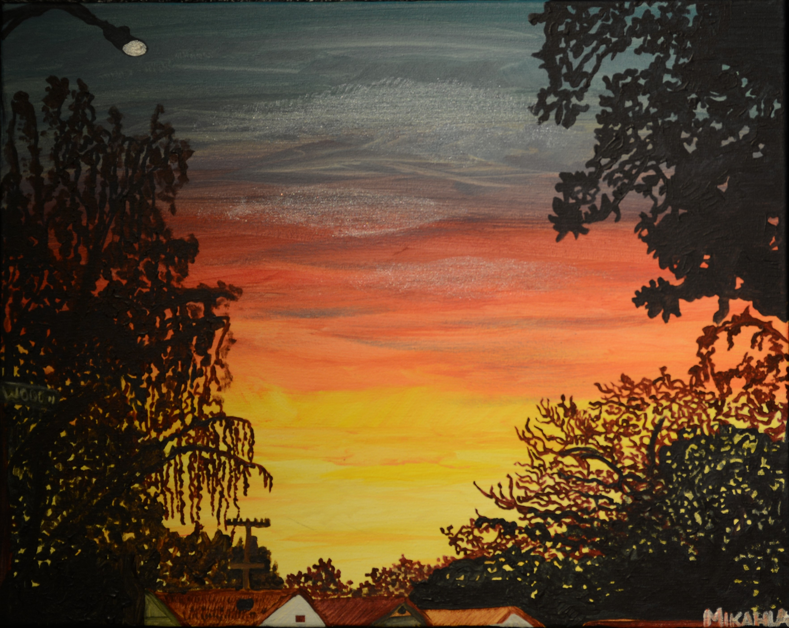

In The Black Gallery At San Jose State
Here is a painting tittled Sunset on the South Side of San Jose, Acrylic On Canvas, painted with only a paint brush
Next Page--->


This painting was a photo of a San Jose sunset taken by a firend. I had to paint it! The sunset was amazing that day and I felt moved to paint it.
Do you want to see another painting? ---Next page--->
To Go Back The Coil Jug Press here